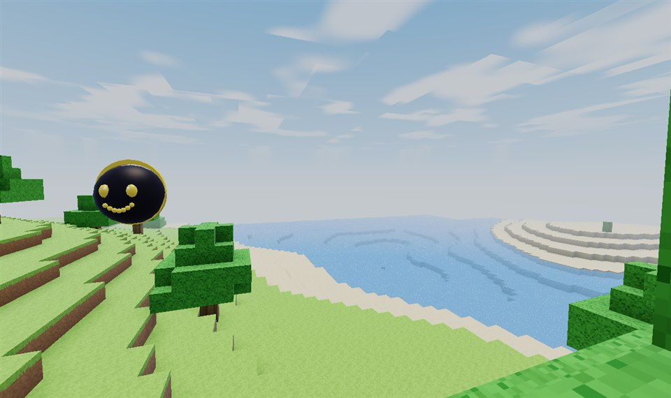
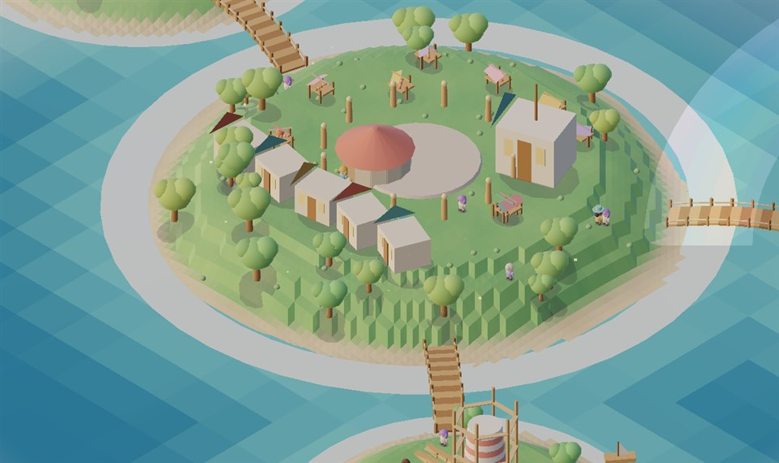

Jon von FelWorks steuert deinen gesamten Computer intelligent. Multi-Provider-KI mit GPT-OSS 120B über NVIDIA, Sprachsteuerung, Echtzeit-Streaming, Langzeitgedächtnis und voller Systemsteuerung — in einem eleganten Black-&-Gold-Design.
Öffne mein Projekt in VS Code und erklär mir die Architektur.
Erledigt. Ich habe das Projekt geöffnet. Die Architektur folgt Clean Architecture mit klarer Trennung von Providern, Services und API-Schicht …
Erstelle mir daraus eine Zusammenfassung als Datei.
Gespeichert unter summary.md ✓
Frag Jon etwas …
Mini JonEmil hört zu …

BlockweltFelWorks Game Collection
Funktionen
Was Jon kann
Nicht nur ein Chat — ein echter Assistent, der handelt.
Neu in den letzten Versionen
Neu in v4.34.7: Jon am Handy — läuft Jon auf einem Raspberry Pi, rufst du im WLAN http://<pi>:8756/app auf und bedienst die komplette Oberfläche mit dem Daumen: Unterhaltungen fahren als Schublade herein, die Kopfzeile schrumpft mit, Eingabefelder lösen kein Zoomen mehr aus, und die Eingabezeile bleibt über Browserleiste und Homebalken stehen. Am PC bleibt alles, wie es war. Aus v4.34.6: Jon Maps versteht Filter — sag „starte eine Route von meinem Standort zum nächsten Supermarkt" oder „zum Interspar in meiner Nähe", und Jon sucht den nächstgelegenen Treffer selbst, plant die Route und stellt die anderen Läden gleich daneben; ein Klick darauf rechnet die Route sofort dorthin um. 22 Filter von Supermarkt über Apotheke bis Bäckerei, dazu Marken- und Ladennamen. Und Jon hat das jetzt auch unterwegs per Telegram dabei — genau wie Mini Jon: Standort teilen, Route bekommen, Kartenpin aufs Handy, und mit /lernen startest du eine Tiefenrecherche von unterwegs, die dir Jon fertig in den Chat schickt, sobald sie durch ist. Dazu kannst du Jon im Zahnrad-Menü jetzt vollständig deinstallieren — mit Vorschau, was wirklich gelöscht wird. Aus v4.34.5: Freunde auf der Karte — gib deinen Standort für einzelne Freunde frei (standardmäßig aus) und sieh, wo sie gerade sind, verschlüsselt über Jons eigene Freundesverbindung. Dazu: die Verstorbenen in ECHO haben endlich ein Modell, im Multiplayer schauen Freunde wieder dorthin, wo sie hinsehen, die Harmonischen Inseln speichern ihren Spielstand und wachsen nach dem Leuchtturm weiter, und Mini Jon bekommt Wangen in 3D. Aus v4.34.4: Jon Maps — eine eigene Karten- und Navigationsplattform in Liquid Glass, mit Hell- und Dunkelmodus, 3D-Gebäuden, echtem Gelände, Globus-Ansicht, Suche, Routen für Fuß, Auto, Fahrrad und Bus & Bahn, Street Exploration mit echten Straßenfotos und einem freien 3D-Erkundungsmodus als Mensch, Auto oder Flugzeug. Dazu Jon Deep Learning: Du gibst Jon ein Thema und ein Zeitbudget, er recherchiert eigenständig im Web, vergleicht Quellen, schreibt sein Wissen in Markdown-Dateien und baut daraus einen Skill, den er ab dann von selbst nutzt. Alles ohne Bezahl-API. Aus v4.34.1: Koop auch in den neuen Spielen — Harmonische Inseln und Blockwelt spielt ihr zu zweit über einen Freundschaftscode, und die Harmonischen Inseln haben jetzt ein Ziel: der Leuchtturm sagt dir, was ihm fehlt, und die Bewohner haben Wünsche. Aus v4.34.0: Die Blockwelt hat keinen Rand mehr — die Welt wächst weiter, solange du läufst, mit Ebenen, Wäldern, Wüsten, Schneeland und Gebirgen, 16 Blocksorten mit echten Texturen, TNT und Enderperle. Aus v4.33.9: die Harmonischen Inseln, ein ruhiges Aufbauspiel in isometrischer Schrägsicht, und der dritte Design-Modus Cozy in Weiß und Rosa. Aus v4.33.8: Jon ruft dich an — dein Handy klingelt wie bei einem normalen Anruf, über SIP direkt aus Jons Backend, ohne Anbieter und ohne Kosten pro Anruf. Dazu aus v4.33.6 die Schwarzloch-Simulation STARFALL nach dem relativistischen Flussprofil von Page und Thorne. Und aus v4.33: Ollama komplett eingebaut — und teilbar. Eigener Einstellungsbereich mit Serverstatus, Verbindungstest, Modellverwaltung und allen Reglern; der Server darf auf einem anderen PC oder über Tailscale laufen. Und mit der Serverfreigabe chatten deine Freunde per Freigabecode über deine Grafikkarte — teilen geht per Knopf direkt im Chat. Dazu neu: echte 3D-Modelle für Mini Jon, Katze und Hund. Dazu aus v3.36: Koop über zwei Geräte, und aus v3.35: Updates laufen direkt in der App.
Präsentationen mit BewegungNeu
Sag das Thema, und Jon baut eine echte PowerPoint: Folienübergänge vom Blenden bis zum Morphen, Animationen, die Stichpunkte nacheinander einblenden, echte Diagramme und Tabellen zum Weiterbearbeiten und Bilder, die er selbst malt. Mit ausformuliertem Text und Sprechernotizen — nicht fünf Stichwörter pro Folie.
Jon lernt aus ÜberraschungenNeu
Vor jeder Aktion sagt Jon sich, wie sicher sie klappt — aus seiner eigenen Statistik, nicht aus dem Bauch. Danach vergleicht er es mit dem, was wirklich passiert ist. Weicht es ab, lernt er daraus: als Erfahrung, als Notiz im Gedächtnis und, wenn etwas unerwartet bricht, als offene Frage, die er selbst klärt. Frag ihn ruhig: „wie sicher bist du dir?“ — du bekommst eine Zahl mit Begründung. Wie der Lernkreis funktioniert
Pläne, die sich selbst korrigierenNeu
Größere Aufträge zerlegt Jon in Schritte mit Abhängigkeiten und arbeitet sie der Reihe nach ab. Scheitert einer, plant er um — mit dem Fehler als Ausgangspunkt, nicht mit demselben Versuch. Läuft ein Plan glatt durch, merkt er ihn sich als Fertigkeit und macht ihn beim nächsten Mal in einem Rutsch. Riskante Schritte fragen weiterhin nach.
Jon im BrowserNeu
Die Jon-Erweiterung für Chrome, Edge und Brave: Ein Klick auf das Jon-Symbol, und die offene Seite wird zusammengefasst, erklärt oder weiterrecherchiert — oder du legst sie in ein Projekt und in Jons Wissen. Rechtsklick auf jede Markierung → Mit Jon …. Gerechnet wird auf deinem PC, nicht in der Cloud. So richtest du sie ein
Browser-AgentNeu
Jon bekommt einen eigenen Browser und benutzt ihn wie du: „Such mir das Buch und leg es in den Warenkorb“ genügt — er plant, öffnet Seiten, liest sie über ihre sichtbaren Elemente, klickt und füllt Formulare aus. Kaufen, buchen, absenden und löschen stoppt ein Wächter im Code und fragt dich mit Anbieter, Betrag und Grund. Passwörter füllt er nie aus, Captchas umgeht er nicht — und versucht eine Website, ihm Anweisungen unterzuschieben, sagt er es dir.
Jon denkt mitNeu
Jon merkt sich, was passiert ist: „Was habe ich gestern gemacht?“ beantwortet er aus echten Daten. Er versteht „vorgestern“ und „letzte Woche“, verfolgt Ziele über Tage hinweg mit Frist und nächstem Schritt, arbeitet nachts nach und schlägt von selbst vor, was ansteht. Dazu ein Risikowächter, gesperrte Systemordner, ein Budget für Tag und Monat und ein Knopf zum Rückgängigmachen.
Dein Handy als GerätNeu
Aus der gekoppelten Handy-App wird ein Gerät, das Jon abfragen darf — genau so weit, wie du es freigibst. Akku, Benachrichtigungen, Dateien in beide Richtungen, Zwischenablage, Standort, Kontakte, Kamera: jede Funktion ein eigener Schalter, in drei Stufen von Standard bis Sensibel. „Jon, schick die PDF auf mein Handy.“
Jon MapsNeu
Eine eigene Karte in Liquid Glass — mit 3D-Gebäuden, Gelände, Globus und Street Exploration. Neu: Jon bedient die Filter selbst. „Starte eine Route von meinem Standort zum nächsten Supermarkt" reicht: Er sucht den nächstgelegenen Treffer, plant Fuß-, Auto-, Fahrrad- oder ÖPNV-Route und zeigt die Alternativen als Chips — ein Klick, und die Route geht dorthin. Auch Ladennamen versteht er („zum Interspar in meiner Nähe"). Alles über OpenStreetMap, ohne Bezahl-API.
Jon unterwegsNeu
Über Telegram hast du Jon und Mini Jon in der Tasche: Standort teilen, Route zum nächsten Supermarkt bekommen, Kartenpin antippen und losgehen. Mit /lernen <Thema> startest du eine Tiefenrecherche, die am PC weiterläuft — fertig meldet sie sich von selbst im Chat. So richtest du es ein
Online-KoopNeu
ECHO, AETHERIA und die Blockwelt spielt ihr jetzt zu zweit: Spiel erstellen, 6-stelligen Freundschaftscode weitergeben, beitreten — fertig. Serverautoritativ, mit Lobby, Ping, Reconnect und geteilter Welt. So funktioniert es
Mini Jon3D
Neu: echte 3D-Modelle. Ein Schalter in „Mini Jon anpassen", und Mini Jon, Katze und Hund werden mit einem eigenen WebGL-Renderer plastisch gerendert — echte Geometrie, Licht, Glanzlicht, sprechender Mund und Blinzeln, mit Live-Vorschau im Dialog. Jons kleiner Sohn Emil lebt als niedlicher Kreis auf deinem Bildschirm — immer da, beim Hochfahren schon wach. Sag „Emil" oder „Mini Jon", er hört durchgehend zu, redet mit dir (mit lippensynchronem Mund), merkt sich euer Gespräch und kann alles, was Jon kann. Auch fürs Handy verfügbar. Farben und Gesicht frei anpassbar.
Jon Code
Ein Coding-Agent wie in einem Editor: Dateibaum, Code-Editor und Jon, der ausschließlich im geöffneten Projektordner arbeitet. Sag „schreib mir in index.html ein Login-Formular" — der Code landet direkt in dieser Datei, modern gestaltet mit Liquid Glass statt grauem Standard.
PowerPoint
„Mach mir eine Präsentation über den Klimawandel." Jon baut eine fertige .pptx mit Titelfolie, Karten, Kennzahlen, Zeitstrahl, Zitaten, Sprechernotizen und elf Farbwelten — und öffnet sie dir.
OllamaNeu
Lokale Modelle ganz ohne API-Key: eigener Einstellungsbereich mit Serverstatus, Verbindungstest, Modellverwaltung und allen Reglern (Temperatur, Top P, Top K, Max Tokens, Context Length, Keep Alive, Seed, System Prompt). Der Server darf auf diesem PC, im Heimnetz oder über Tailscale laufen — und du kannst ihn per Freigabecode für andere Jon-Nutzer freigeben. Komplette Anleitung
Lokal & gratis
Ollama und LM Studio als lokale Modelle — ganz ohne API-Key und ohne Kosten. Plus Free-Tiers von NVIDIA, Gemini und Groq.
Jon ruft anNeu
„Ruf mich in 15 Minuten an." Dein Handy klingelt, du hebst ab, und Jon redet mit dir — er hört zu, antwortet, und du kannst ihn mitten im Satz unterbrechen. Und andersherum: du kannst Jon anrufen, auch von unterwegs mit mobilen Daten. Läuft über SIP im eigenen Netz: kein Twilio, kein Anbieter, keine Kosten pro Anruf. Auch wiederkehrend („jeden Montag um 18 Uhr").
Erinnerungen
„Erinnere mich jeden Tag um 13 Uhr ans Trinken." Jon meldet sich mit Nachricht und Benachrichtigung.
Echtzeit-Streaming
Antworten Token für Token, inklusive sichtbarem Denkprozess — mit großem Antwortlimit.
Langzeitgedächtnis
Jon merkt sich Fakten über alle Unterhaltungen hinweg — lokal in SQLite.
Systemsteuerung
PowerShell, CMD, Programme, Explorer, VS Code — plus Systeminfos, Prozesse und Bildschirm sperren.
Dateien & Archive
Lesen, schreiben, suchen, kopieren, verschieben, löschen und ZIP packen/entpacken.
Erst fragen
Jon fragt vor jeder Aktion um Erlaubnis. Jeder Befehl ist aufklappbar sichtbar — oder du erlaubst alles.
Maus & Tastatur
Jon bewegt die Maus, klickt und tippt selbst — er bedient Apps wie du.
Sprachsteuerung
Sag einfach „Jon" — er hört zu, führt aus und antwortet dir mit Stimme.
Skills & eigenes Prompt
Bearbeitbare Anleitungen (Web-Design, PowerPoint, Spiele …) und ein eigenes System-Prompt — bring Jon deine Arbeitsweise bei.
Konten & Modelle
OpenAI, Anthropic, Gemini, OpenRouter, Groq, xAI & mehr per API-Key. Jon erkennt alle Modelle automatisch.
Nutzung /usage
Sieh real gemessene Tokens, Anfragen und Antwortzeiten pro Anbieter.
Spiele eingebaut
Die FelWorks Game Collection gehört dazu: ECHO (Horror), AETHERIA (Open-World-RPG), STARFALL (Schwarzes Loch), die Harmonischen Inseln (cozy Aufbauspiel) und die Blockwelt. Zu finden unter Werkzeuge → Spiele, gestartet wird erst auf Klick. ECHO, AETHERIA und die Blockwelt haben Online-Koop über Freundschaftscode.
DownloaderNeu
Link einfügen, Jon liest Titel, Kanal, Dauer und Vorschaubild aus und lädt das Video in bester Qualität, 1080p, 720p oder 480p — oder nur die Tonspur als MP3. Läuft komplett auf deinem PC. Wie es funktioniert
Handy-App
Chatten, Apps öffnen, teilen, vorlesen, zuhören und Bilder analysieren — mit eigenem API-Key.
Installation
In 3 Schritten startklar
Der schnellste Weg: die fertige Jon-Setup.exe — App, Mini Jon und Backend inklusive, API-Keys trägst du direkt in der App ein. Für Entwickler geht es auch aus dem Quellcode:
Die installierbare Web-App: Chatte mit Jon von unterwegs — mit deinem eigenen API-Key, gespeichert nur auf deinem Gerät.
1
App auf dem Handy öffnen
Öffne diese Website auf deinem Handy und tippe unten auf „Handy-App öffnen".
2
Zum Startbildschirm hinzufügen
Im Browser-Menü „Zum Startbildschirm hinzufügen" wählen — Jon installiert sich wie eine echte App.
3
Provider antippen & Key einfügen
Tippe auf NVIDIA, GLM oder einen anderen Provider, füge deinen API-Key ein — fertig. Der Key bleibt lokal auf deinem Handy.
Unterwegs kann Jon Apps öffnen (WhatsApp, YouTube, Maps, Kamera …), über das Teilen-Menü teilen, Antworten vorlesen, dir per Spracheingabe zuhören und angehängte Bilder analysieren. Kontakte, Nachrichten und fremde Dateien bleiben aus Sicherheitsgründen tabu — dafür nutzt Jon die bestmögliche offizielle Alternative.
Lieber mit dem Kleinen reden? Mini Jon (Emil) gibt es jetzt auch fürs Handy — genauso klein und direkt wie am PC: antippen oder „Emil" sagen, er antwortet mit Stimme und merkt sich euer Gespräch.
Dein PC bleibt zu Hause, Jon nicht: Über einen eigenen Telegram-Bot schreibst oder sprichst du mit ihm von überall — und Mini Jon hat seinen eigenen Bot. Neu in v4.34.6: Beide haben jetzt Jon Maps und Jon Deep Learning dabei.
1
Bot anlegen & verbinden
Bei @BotFather in Telegram einen Bot erstellen, den Token in Jons Einstellungen einfügen, dem Bot einmal schreiben — dieser Chat gehört ab dann fest zu deinem PC. Für Mini Jon einen zweiten Bot mit eigenem Token.
2
Standort teilen
📎 → Standort. Ab dann ist „hier" wirklich dort, wo du bist: „Route von meinem Standort zur nächsten Apotheke" — Jon antwortet mit Dauer, Entfernung, einem Kartenpin zum Antippen und einem Routenlink fürs Handy.
3
Von unterwegs lernen lassen
/lernen Quantencomputer 30 Minuten startet eine echte Tiefenrecherche auf deinem PC. /lernstatus zeigt den Stand, /lernstop bricht ab, /lernweiter macht weiter — und wenn Jon fertig ist, schickt er dir Zusammenfassung, Quellen und Dateien in den Chat.
Oder ganz ohne Telegram: der Pi im WLAN
Läuft Jon auf einem Raspberry Pi, öffnest du am Handy einfach http://<pi>:8756/app — das ist die volle Jon-Oberfläche im Browser, seit v4.34.7 fürs Handy gebaut: Unterhaltungen als Schublade hinter ☰, mitschrumpfende Kopfzeile, Daumen-große Knöpfe, kein Zoom-Sprung beim Tippen und eine Eingabezeile, die über der Browserleiste bleibt. „Zum Startbildschirm hinzufügen" macht daraus eine App.
In Gruppen antworten Jon und Mini Jon nur, wenn sie mit @Namen angesprochen werden — und dort ganz bewusst mit kleinerem Werkzeugkasten: Karten, Routen, Websuche, Wetter und Deep Learning ja, dein PC und deine privaten Daten nein. Den vollen Zugriff hat nur der Chat, der mit deinem PC verbunden ist.
FelWorks Game Collection
Jon Spiele
Die FelWorks Game Collection ist Teil von Jon. Werkzeuge → Spiele → Starten — Jon bleibt dabei offen, nichts startet von allein. Neu: Harmonische Inseln, ein ruhiges Aufbauspiel in isometrischer Schrägsicht — und die Blockwelt läuft jetzt als eigenes Programm.
Psychological Horror · FelWorks
ECHO
First-Person-Horror in einem seit Jahren geschlossenen Krankenhaus: 4 Etagen, 464 Räume, eine Regie, die auf dein Verhalten reagiert, und fünf Enden. Neu: in jedem Flur wartet mindestens ein Jumpscare mit eigenem Kreaturen-Modell, H blendet den direkten Weg zum Ziel ein — und zu zweit im Koop.
WASD laufen · F Taschenlampe · H Wegweiser · Tab Tagebuch · Online-Koop
Fantasy Open World RPG · FelWorks
AETHERIA
Offene Fantasy-Welt mit sechs Dörfern, Bewohnern, Aufträgen, Stufenaufstieg, Tag- und Nachtwechsel und einer Weltkarte. Neu: Online-Koop über Freundschaftscode — zwei Reisende, eine Welt, gemeinsame Quests und ein geteilter Tag-Nacht-Zyklus.
Ein rotierendes Schwarzes Loch in Echtzeit — für jeden Bildpunkt wird eine Nullgeodäte in der Kerr-Metrik integriert. Gravitationslinse, Photonenring und die Scheibe, die durch die Lichtkrümmung gleichzeitig über und unter dem Horizont erscheint, entstehen aus der Rechnung, nicht aus einem Effekt. Sechs Objekte von Sagittarius A* bis M87*, Masse und Spin live verstellbar, alle Kennzahlen mitgerechnet. Neu: Die Scheibe strahlt nach dem relativistischen Flussprofil von Page und Thorne, mit Randverdunklung und endlicher Schichtdicke — und sobald du die Kamera stehen lässt, baut sich das Bild in voller Auflösung auf, bis der Photonenring messerscharf steht.
1-6 Objekt · Ziehen drehen · Mausrad Abstand · V Ansicht · Pfeile Regler · Kerr-Metrik

Cozy Aufbauspiel · FelWorks
Harmonische Inseln
Ein schwebendes Archipel in der Abendsonne, von oben in echter 2.5D-Schrägsicht. Von der Herzinsel mit Markt, Werkstatt und Gildenhalle führen Holzbrücken zur Farm, zur Steinmutter und zur Werft. Der unfertige Leuchtturm sagt dir, was ihm fehlt: mal Korn von der Farm, mal Stein aus dem Berg, mal Bretter aus der Werkstatt. Sechs Stufen später brennt sein Licht und alle feiern. Neu: Über dem Kopf mancher Bewohner schwebt ein Wunsch — wer schenkt, bekommt ein Herz. Und zu zweit geht es auch. Die Bewohner leben ihr eigenes Leben — sie wandern über die Brücken, tragen selbst Bretter zur Baustelle, spielen mit ihren Haustieren und jubeln mit, wenn der Turm wächst. Kein Zeitdruck, kein Verlieren.
WASD laufen · E sammeln & abgeben · F schenken · K Koop · Tab Übersicht · Goldstunde
Sandbox · FelWorks
Blockwelt
Die Voxel-Sandbox, in der Mini Jon mitspielt — als eigenes Programm, nicht im Browser. Neu: Die Welt hat keinen Rand. Felder entstehen, während du läufst, und werden hinter dir wieder freigegeben; aus Perlin-Rauschen wachsen Ebenen, Wälder, Wüsten mit Kakteen, Schneeland und Gebirge. 16 Blocksorten mit echten Texturen, die beim Start selbst gemalt werden, dazu TNT mit Lunte und die Enderperle, die dich dorthin versetzt, wo sie landet. Drück T, und Mini Jon baut dir Haus, Turm, Brücke, Baum oder Leuchtfeuer, Block für Block zum Zuschauen.
WASD laufen · Links abbauen · Rechts setzen · 1-9 Block · T Mini Jon · K Koop · ∞ endlos
Alle fünf sind im Download enthalten und starten erst, wenn du in Jon auf Starten klickst — jedes in einem eigenen Fenster. STARFALL und die Harmonischen Inseln erkennen schwache Grafikkarten und schalten dort selbst einen Gang zurück.
Online-Koop
Zusammen spielen
ECHO, AETHERIA und die Blockwelt haben einen echten Online-Koop — serverautoritativ, mit Freundschaftscode, Lobby, Ping-Anzeige und automatischem Reconnect. Der Server ist Jon selbst: er läuft schon, wenn du start-jon.bat oder die Jon.exe startest. Seit v3.36.3 reicht im Heimnetz der Code allein — Jon sucht den Gastgeber im Netzwerk, dein Laptop findet deinen PC ohne eine einzige Einstellung.
01
Spiel erstellen
Ein Klick — der Server legt eine Lobby an und würfelt einen 6-stelligen Freundschaftscode.
02
Code weitergeben
Zum Beispiel AB39KD. Im gleichen Netzwerk ist das alles — für Spiele übers Internet gibt es zusätzlich die Einladung mit Adresse: AB39KD@84.12.9.3:8760, ein Klick zum Kopieren.
03
Beitreten und bereit
Dein Freund tippt den Code ein — Jon sucht den Gastgeber im Netzwerk und verbindet direkt zu ihm. Dann „Bereit“, der Host startet, beide spawnen gleichzeitig in dieselbe Welt.
FreundschaftscodeAB39KD
Lobby offen
FelixHost14 ms
JonasBereit28 ms
Freier Platz
Laptop findet PC von allein
Im Heimnetz genügt der Code: Jon fragt über das Netzwerk, wer die Lobby hat, und schickt den Spieler direkt zum Gastgeber. Offen sind dafür nur die Koop-Ports 8760 (Browser), 8759 (ECHO/AETHERIA) und die Suche auf UDP 8761 — Chat, Dateien und PC-Steuerung bleiben auf deinem Rechner. Blockt die Windows-Firewall, gibt ein Knopf in der Lobby die drei Ports frei. Übers Internet: Portfreigabe beim Gastgeber.
Server hat das letzte Wort
Positionen, Blöcke, Türen, Rätsel, Quests und der Spielstand werden serverseitig geprüft. Wer sich unmöglich bewegt, wird zurückgesetzt — Items lassen sich nicht herbeizaubern.
Flüssig statt ruckelig
Delta-komprimierte Snapshots mit 20 Hz, Interpolation, Client-Prediction und Lag-Kompensation. Keine Teleports, kein Gummiband.
Verbindung abgerissen?
Heartbeat, Ping, Paketverlust-Anzeige und automatischer Reconnect. Deine Sitzung bleibt auf dem Server erhalten — auch wenn Jon neu startet.
Eigener Charakter
Jeder bekommt eine eigene PlayerID, ein eigenes Modell und ein Namensschild mit Ping. Laufen, rennen, ducken, springen, fallen, angreifen — alles synchron. Und jede Figur schaut dorthin, wohin ihr Spieler wirklich blickt, inklusive Kopfneigung.
Gemeinsame Welt
Ein Blockwechsel, eine Tür, ein Hebel, ein gelöstes Rätsel, ein NPC-Gespräch: was einer tut, sieht der andere sofort. Auch Jons Bauaufträge in der Blockwelt.
Downloader
Der Downloader
Ein Link genügt. Jon liest aus, was dahintersteckt, zeigt dir Titel, Kanal, Dauer und Vorschaubild — und lädt dann herunter, was du willst. Zu finden unter Werkzeuge → Downloader.
Erst prüfen
Bevor irgendetwas geladen wird, holt Jon die Eckdaten: Titel, Kanal, Dauer, Vorschaubild. So siehst du sofort, ob der Link stimmt — und wie groß das wird.
Video oder nur Ton
Vier Qualitätsstufen — beste verfügbare, 1080p, 720p, 480p — oder du nimmst nur die Tonspur als MP3. Bei Playlists holt Jon gezielt den einen Titel, nicht die ganze Liste.
Fortschritt live
Prozent, Tempo und verbleibende Zeit laufen mit. Geht etwas schief, sagt Jon in ganzen Sätzen warum: Video privat, altersbeschränkt, im Land gesperrt, gelöscht — statt einer roten Fehlermeldung.
Bleibt bei dir
Der Downloader läuft auf deinem eigenen PC, nicht auf einem Server im Netz. Die Datei landet direkt bei dir, es geht nichts durch fremde Hände, und niemand führt Buch darüber, was du lädst.
Der Downloader ist Teil der App und läuft lokal — auf dieser Website gibt es ihn bewusst nicht als Dienst zum Anklicken. Lade nur herunter, wozu du berechtigt bist: eigene Uploads, ausdrücklich freigegebene Inhalte oder was das Recht deines Landes für den privaten Gebrauch erlaubt. Die Nutzungsbedingungen der jeweiligen Plattform gelten weiterhin.
Werkstatt
Jon macht jetzt Dateien
Nicht erklären, wie man eine PDF schreibt — sie schreiben. Eine echte Datei auf deiner Festplatte, am richtigen Ort, anklickbar im Chat.
Echte Dokumente
PDF, Word, OpenDocument, Excel, ODS, CSV, Markdown, Text und jede Code-Datei. Den Inhalt formuliert Jon vollständig aus — Überschriften, Absätze, Aufzählungen, nummerierte Schritte, bei Tabellen echte Zellen mit fetter Kopfzeile.
Sein eigener Ordner
Beim ersten Start legt Jon sich Jon/ an, mit Fächern für Projekte, Dokumente, PDFs, Bilder, Videos, Blender, Code und mehr. Sagst du nichts dazu, sortiert er selbst ein — die PDF unter PDFs, das Skript unter Code.
Im Ordner öffnen
Jede Datei erscheint als Karte mit Öffnen, Herunterladen und Im Ordner öffnen. Der Knopf öffnet wirklich den Dateimanager — Explorer, Finder oder deinen Linux-Dateimanager, mit der Datei markiert.
Dein Speicherort gewinnt
„Speicher das auf dem Desktop." „Leg alles unter Desktop/Meine Projekte/Essen ab." „Mach einen Ordner namens YouTube Projekt." Der Ordner wird angelegt und benutzt — ohne dass du einen Pfad tippen musst.
3D mit Blender
Beschreib die Szene — Jon schreibt das Python-Skript selbst, lässt Blender im Hintergrund laufen, repariert eigene Fehler und versucht es erneut, speichert die .blend-Datei, rendert ein Vorschaubild und exportiert nach fbx, obj, glb, gltf oder stl.
Er findet es wieder
Jede Datei landet in einem Index mit Titel, Projekt und Zeit. „Zeig mir die PDF über Essen von letzter Woche" genügt — Jon sucht nach Bedeutung und Zeitraum, nicht nach Dateinamen.
Auch über Telegram
Was Jon erzeugt, schickt er dir als Dokument in den Telegram-Chat — mit Namen und Ablageort. Zu große Dateien meldet er ehrlich, statt sie stumm zu verschlucken.
In klaren Grenzen
Jon arbeitet in seinem Ordner, deinem Benutzerordner und Ordnern, die du freigibst. Systemverzeichnisse sind gesperrt, Pfad-Tricks laufen ins Leere, und nichts wird versehentlich überschrieben.
Lernkreis
Jon lernt aus dem, was ihn überrascht
Die meisten Assistenten handeln und hören dann auf. Jon sagt sich vorher, was er erwartet, vergleicht es mit dem Ergebnis — und der Unterschied ist sein Lehrstoff. Alles davon läuft lokal auf deinem Rechner.
1
Erwarten
Vor jedem Werkzeug schätzt Jon aus seiner eigenen Statistik, wie wahrscheinlich es klappt, und rechnet bekannte Stolpersteine im Bereich mit ein. Frag ihn „schaffst du das?“ — du bekommst eine Zahl mit Begründung statt eines freundlichen Ja.
2
Handeln
Das Werkzeug läuft wie gewohnt — mit Risikowächter, Freigabe bei allem Heiklen und dem Knopf zum Rückgängigmachen. An der Sicherheit ändert der Lernkreis nichts.
3
Vergleichen
Ergebnis und Dauer werden gegen die Erwartung gehalten. Der Abstand ist die Überraschung. Unter Denken → Gelernt siehst du, wie treffsicher Jon zuletzt war und welche Werkzeuge ihn am häufigsten überraschen.
4
Lernen
Große Überraschungen werden zu Erfahrungen und zu Notizen im Gedächtnis. Bricht etwas unerwartet, das früher lief, legt Jon sich selbst die offene Frage hin, warum — und klärt sie auf Klick oder über Nacht.
Er sagt, was er nicht weiß
Statt zu raten, merkt sich Jon die Frage. Auch Widersprüche in seinem Gedächtnis werden zu Fragen, statt stumm nebeneinander zu stehen. Beantwortet er eine, landet die Antwort dauerhaft in seinem Wissen.
Fertigkeiten aus Gewohnheit
Machst du denselben Ablauf immer wieder, findet Jon das Muster in seinem Protokoll und merkt es sich als einen Handgriff — mit Namen, Platzhaltern und Erfolgsquote. Danach erledigt er ihn in einem Rutsch.
Er teilt sich den Aufwand ein
Auf einen kurzen Zuruf antwortet Jon direkt. Bei einem vielschichtigen Auftrag holt er mehr Hintergrund heran, prüft sich strenger selbst und zerlegt die Sache in einen Plan. Du merkst nur, dass die Antworten passen.
Alles abschaltbar
Unter Einstellungen → Jons Denken. Erwartung, Aufwandsschätzung und das Sammeln offener Fragen laufen lokal und kosten nichts. Das nächtliche Klären und das automatische Lernen von Fertigkeiten sind bewusst aus, bis du sie einschaltest.
Browser-Erweiterung
Jon im Browser
Die Jon-Erweiterung für Chrome, Edge und Brave. Sie enthält keinen zweiten Jon — sie spricht mit dem Jon, der auf deinem Rechner läuft. Dein Modell, dein Gedächtnis, deine Projekte.
Ein Klick auf die Seite
Zusammenfassen, erklären, weiterrecherchieren, markierten Text verbessern, zu Jons Wissen hinzufügen, in ein Projekt speichern — oder frei fragen. Die Antwort läuft Wort für Wort im Popup mit.
Rechtsklick „Mit Jon …“
Auf jeder Seite und jeder Markierung: erklären, zusammenfassen, übersetzen, recherchieren, zu Jon senden, zu einem Projekt hinzufügen, als Notiz speichern.
Datensparsam
Kein dauerhaftes Content-Script: Die Seite wird nur gelesen, wenn du eine Aktion auslöst — und das lässt sich abschalten. Im Chat hat die Erweiterung nur Jons Gast-Werkzeuge: keine Dateien, keine Systembefehle. Der Geräte-Schlüssel bleibt im lokalen Speicher deines Browsers.
Nichts geht in die Cloud
Alles läuft über 127.0.0.1 zu deinem eigenen Jon. Läuft Jon gerade nicht, sagt die Erweiterung das — statt heimlich woanders zu fragen.
1
Ordner holen
Entweder den Download hier entpacken oder den Ordner resources\extension aus deiner Jon-Installation nehmen — die Erweiterung liegt jedem Windows-Paket bei.
2
In den Browser laden
chrome://extensions öffnen, Entwicklermodus einschalten, Entpackte Erweiterung laden — und den Ordner auswählen.
3
Mit deinem Jon verbinden
In Jon: Einstellungen → Diagnose → Kopplung, Geräte-Schlüssel kopieren. In der Erweiterung: Jon-Symbol → ⚙ → Adresse und Schlüssel eintragen → Verbindung testen.
Chromium-Browser mit Manifest V3: Chrome, Edge, Brave, Vivaldi und Opera ab Version 116. Im Erweiterungscode stehen keine Passwörter, keine API-Schlüssel und keine Zugangsdaten.
Jon · FelWorksTheresienfeld · AT
Über mich
Über mich
Hi, ich bin Felix, ein leidenschaftlicher Softwareentwickler aus Österreich. Ich liebe es, Ideen in echte Projekte zu verwandeln und ständig neue Technologien zu entdecken. Egal ob moderne Webanwendungen, KI oder kreative Tools, ich probiere gerne Neues aus und entwickle Lösungen, die nicht nur funktionieren, sondern auch Spaß machen.
Im Mittelpunkt steht dabei Jon, mein KI-Assistent. Für dieses Projekt experimentiere ich mit künstlicher Intelligenz, lokalen Sprachmodellen, Smart-Home-Integration und moderner Softwareentwicklung. Jon ist für mich nicht nur ein spannendes Projekt, sondern auch eine Möglichkeit, neue Ideen auszuprobieren und mich als Entwickler weiterzuentwickeln.
Jon erscheint bei FelWorks (FelWorks Webentwicklung) aus Theresienfeld in Österreich — genauso wie die FelWorks Game Collection. Alle rechtlichen Angaben zu FelWorks stehen im Impressum.
Ich glaube daran, dass man nie ausgelernt hat. Deshalb verbringe ich viel Zeit damit, neue Programmiersprachen, Frameworks und Technologien auszuprobieren und mein Wissen in spannende Projekte einfließen zu lassen. Mein Ziel ist es, Software zu entwickeln, die nützlich, innovativ und einfach zu bedienen ist.
FH
Felix HeinischEntwickler von Jon · FelWorks
Download
Download
Jon App mit Mini Jon und Backend — komplett in einem Paket. Wähle, wie du Jon haben willst.
Die .exe installiert Jon mit Startmenü- und Desktop-Verknüpfung. Die ZIP entpackst du einfach in einen Ordner und startest Jon.exe — gleiche App, gleiche Funktionen, keine Installation nötig. Einmal installiert, bleibst du aktuell: ab v3.35 lädt Jon neue Versionen selbst herunter, prüft sie und installiert sie auf Knopfdruck — deine Chats und Konten bleiben dabei unangetastet.
In beiden Varianten sind die Jon App, Mini Jon (Emil), die Spiele und das komplette Backend enthalten — es startet automatisch mit. Deine API-Einstellungen trägst du direkt in der App ein (Zahnrad → Konten): Key einfügen, fertig. Alle Keys bleiben ausschließlich lokal auf deinem Gerät. Ganz ohne Key läuft Jon gratis mit Ollama oder LM Studio — seit v4.33 mit eigenem Einstellungsbereich, Serverstatus, Modellverwaltung und Serverfreigabe für andere Jon-Nutzer — teilen geht per Knopf direkt im Chat.
Windows zeigt beim ersten Start eventuell „Der Computer wurde durch Windows geschützt" oder der Browser warnt beim Download. Das ist die übliche SmartScreen-Meldung für neue Programme ohne (teures) Herausgeber-Zertifikat — keine Schadsoftware-Meldung. Jon ist Open Source, der komplette Quellcode ist auf GitHub einsehbar. Zum Starten: Weitere Informationen → Trotzdem ausführen.